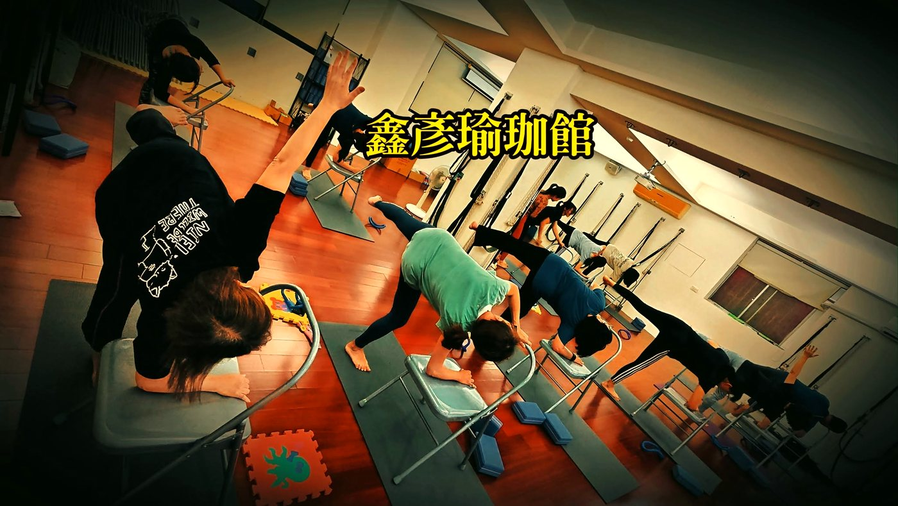

壓力大、生理期時，怎麼溫和地動一動

- 面臨高壓或生理期悶脹時，身體正處於交感神經過載或無菌性發炎期，強行進行高強度訓練只會引發發炎風暴。
- 完全臥床不動同樣不利，靜滯會使骨盆腔前列腺素與代謝廢物沉積，加劇下背與骨盆底肌群的水腫性痠痛。
- 破局關鍵在於「低代謝微量動態（Low-Metabolic Micro-Movements）」：透過抱枕被動承托、靠牆倒箭式促進體液回流。
- 練習的核心指標是「自主深長呼吸無受阻」，用溫和輔助取代肌肉硬抗，讓身心安全降落於副交感修復窗格。
當工作壓力排山倒海而來，或是每個月生理期報到的那幾天，你大概經常陷入兩難的矛盾心理：心裡清楚「動一動可以促進循環、放鬆肌肉」，但拖著疲憊沉重的身軀，只要想到去健身房舉重、跑步或上一堂高強度的體能課，全身細胞就湧起強烈的排斥抗拒；但如果選擇整天蜷曲在沙發或床上完全不動，腹部卻越躺越悶脹、下背與肩頸也越躺越僵硬。這並不是意志力軟弱，而是神經內分泌系統在向你發出精準的保護訊號。這種時刻，身體要的不是「更用力」，而是「有支撐的溫和引導」。
壓力與荷爾蒙的生理風暴：為什麼這時候不能硬操？
在神經生物學中，當人體面臨長期的工作焦慮或突發的精神壓力時，大腦的下視丘-垂體-腎上腺軸（HPA 軸）會被高度活化，促使體內持續釋放大量的皮質醇（Cortisol）與正腎上腺素。交感神經長久處於作戰狀態，導致呼吸模式退化為短淺的上胸鎖骨式呼吸，提肩胛肌、上斜方肌與斜角肌群全天候處於等長攣縮之中。
而在女性生理期前後，體內的黃體素劇烈下降，子宮內膜脫落並釋放大量的前列腺素（PGF2α）。前列腺素會引發子宮肌層的強烈收縮痙攣，並且這些化學介質會擴散並刺激骨盆內臟神經，透過反射通路波及腰薦神經叢（L4–S3），引發下背深層的腰方肌、梨狀肌與骨盆底肌群產生連帶的保護性收縮。
| 身體狀態與維度 | 高強度運動（錯誤應對） | 低代謝微量動態（正確修復） |
|---|---|---|
| 神經內分泌反應 | 皮質醇再次飆升，誘發自律神經耗竭風暴 | 活化迷走神經傳導，抑制交感神經亢奮 |
| 能量代謝模式 | 大量消耗肌糖原，乳酸堆積造成二次發炎 | 零能量負債，維持深層微血管微循環灌流 |
| 骨盆腔與子宮張力 | 腹壓驟增壓迫子宮，引發劇烈經痛痙攣 | 溫和外展與重力減壓，促進骨盆充血消退 |
| 身心主觀體感 | 運動後極度虛脫、頭昏腦脹、經期紊亂 | 胸廓深度舒展、下腹溫熱輕盈、思緒平靜 |
為什麼完全僵臥不動，反而讓下腹與下背更悶更緊？
既然不能劇烈運動，那是不是「完全躺平不動」最好？答案是否定的。人體的靜脈血管與淋巴系統缺乏心臟那樣的主動動力泵，必須仰賴周圍骨骼肌的微幅收縮與舒張，才能將體液逆著地心引力推送回循環中心。
當你在生理期整天蜷曲臥床時，骨盆底與腹股溝的血管處於受壓狀態，局部微循環流速降至最低點。子宮收縮釋放的前列腺素無法被血流迅速帶走代謝，便在骨盆腔與深層結締組織中高度濃縮聚積，加劇組織水腫與化學性神經致敏；同時，長時間靜臥使下背部胸腰筋膜逐漸失水變黏，這正是為什麼躺了一整天後起身，腰背部反而僵硬得像生鏽齒輪的原因。
這幾天的練習目標絕非追求任何「動作外觀角度」或「肌力突破」，而是為緊繃的神經系統降溫，利用溫和支撐讓呼吸變長，把身體從高壓耗損狀態安全過渡到自我修復頻道。
給疲憊身體的「低代謝微量動態」修復菜單
所謂低代謝微量動態（Low-Metabolic Micro-Movements），就是借助抱枕、毛毯與牆壁等輔具承托自重，在「心率不飆升、肌肉不發抖、無痛感干擾」的安全窗格內完成深層放鬆：

修復動作一：抱枕支撐仰臥束角式（Supported Supta Baddha Konasana）
適合時機：下腹悶脹、骨盆沉重、經期第 1 至 3 天。
操作細節：將一個厚長抱枕直放在身後，尾端抵住薦骨後方，在抱枕下方墊磚做成約 15 至 30 度的微幅斜坡。慢慢仰躺在抱枕上，讓脊椎與後腦勺獲得完整支撐。雙腳腳掌相對、雙膝向兩側自然分開，在雙大腿膝蓋外側各墊一塊瑜伽磚或折疊毛毯。這個動作能溫和展開鼠蹊部的內收肌群，解除大腿根部的神經牽扯，同時被動展開前胸，讓橫膈膜在無阻礙下自然擴張。
修復動作二：靠牆倒箭式（Supported Viparita Karani）
適合時機：雙腿水腫、下背痠沉、大腦思緒過度緊繃。
操作細節：側坐在牆邊，將臀部下方墊一條折疊毛毯（厚度約 5 至 8 公分），隨後轉身仰躺，將雙腿順勢垂直靠在牆壁上，臀部距離牆面約 5 至 10 公分以保持下背舒適。雙手向兩側展開、手心朝上。此體位借助重力自然引流下肢沉積的靜脈血液與組織液，顯著降低下背豎脊肌與腰方肌的持續承重，為心臟減輕泵血負擔。
修復動作三：4-7-8 橫膈膜節律呼吸法
適合時機：胸悶心悸、焦慮難眠、肩頸緊繃難耐。
操作細節：選擇舒適的坐姿或仰臥，一隻手輕放在胸口，另一隻手放在肚臍上方。用鼻子緩慢吸氣 4 秒，感受腹部與下肋骨立體隆起；溫和屏息 7 秒（若感到憋悶可減為 4 秒）；接著用嘴巴像吹蠟燭般細細長長地吐氣 8 秒。透過顯著延長呼氣相位，能直接刺激肺部牽張感受器與迷走神經，促使大腦釋放乙醯膽鹼，在生理層面切斷交感神經的過載狂飆。
| 修復練習項目 | 力學與神經學效益 | 建議停留時間與輔具設定 |
|---|---|---|
| 支撐仰臥束角式 | 被動伸展內收肌與鼠蹊韌帶，緩解骨盆充血 | 停留 5 至 8 分鐘，膝下務必墊磚防拉傷 |
| 靠牆倒箭式 | 促進下肢靜脈瓣膜回流，卸載腰薦椎軸向壓力 | 停留 5 至 10 分鐘，臀下墊薄毯維持腰曲 |
| 4-7-8 節律呼吸 | 刺激迷走神經傳導，抑制皮質醇分泌與肌肉痙攣 | 進行 5 至 8 個完整呼吸循環，全程無痛 |
為什麼壁繩瑜伽能提供無痛安全的「重力懸吊卸載」？
當身體處於極度疲勞或經期虛弱時，我們通常無法依賴自身的肌肉力量去抵抗重力做體態調整。如果此時勉強進行傳統站姿瑜伽，往往會誘發嚴重的骨盆前傾、聳肩代償與關節夾擠。
壁繩瑜伽（Wall Rope Yoga）在這種生理情境下具有不可替代的溫和價值。壁繩如同為身體提供了一副堅固而溫柔的外骨骼，利用專利骨盆吊帶將身體重量百分之三十至七十完全承托。在壁繩懸吊的向前延伸或低位骨盆放鬆動作中，腹腔與骨盆內部呈現「零內部壓迫（Zero Abdominal Pressure）」的懸浮狀態；學員無需耗費核心肌力硬撐，腰薦椎間盤便能在輕柔的被動牽引下恢復微觀間距，讓僵硬深層的腰大肌與骨盆筋膜在完全被保護的安全窗格內逐一解鎖。
紅旗警訊（Red Flags）：哪些疼痛絕非生理期或疲勞常態？
溫和練習的前提是排除急性醫療病症。若你在日常或生理期伴隨以下任何紅旗警訊，請絕對不要嘗試自主拉筋或按摩，應立即尋求婦產科、急診或專業醫療診斷：
- 突發性單側下腹劇痛：下腹單側突然出現如刀割或撕裂般的劇烈劇痛，伴隨冒冷汗、臉色蒼白或噁心嘔吐（需緊急排除異位妊娠破裂、卵巢囊腫扭轉或黃體破裂出血）。
- 發燒畏寒伴隨異常分泌物：骨盆深層劇痛同時伴隨體溫高於 38 度、寒顫、或出現異味分泌物（需高度懷疑急性骨盆腔發炎 PID 或輸卵管卵巢膿瘍）。
- 非經期異常大量失血：出血量極大（每小時需更換兩片以上浸透的衛生棉）、伴隨嚴重暈眩、眼發黑或甚至昏厥等急性失血休克前兆。
想找出日常壓力如何在你的體態上留下緊繃印記？
AI 體態檢測在教室現場透過精密光學掃描，精準量化肩頸張力不對稱、骨盆旋轉與呼吸代償程度，由專業老師為你規劃量身定製的溫和減壓指引。
預約首次 NT$299 AI 體態檢測本文為體態結構衛教與運動力學知識分享，非醫療診斷或治療處方。若有劇烈疼痛、外傷或器質性病變，請先尋求婦產科、復健科或物理治療師等醫療專業人員評估。
常見問題
壓力過大或處於生理期時，為什麼不適合進行高強度重量訓練或劇烈有氧？
高壓狀態下體內皮質醇與正腎上腺素濃度已處於高檔，而生理期子宮內膜脫落與前列腺素分泌正引發局部無菌性發炎；此時若強行進行高強度力竭訓練，會促使下視丘-垂體-腎上腺軸（HPA 軸）嚴重超載，引發全身性發炎反應與血管痙攣，不僅無法舒壓，反而加劇疲勞、自律神經失調與經痛。
生理期前幾天完全躺著不動，為什麼反而感覺下腹悶脹與腰痠加劇？
長時間臥床或維持靜態屈曲坐姿，會使骨盆腔微循環與下肢靜脈、淋巴回流顯著趨緩，導致前列腺素與發炎代謝物質積聚於骨盆結締組織與子宮周邊韌帶，造成局部水腫與深層充血；適度的低強度微量活動能借助溫和肌肉泵帶動體液循環，有效代謝致痛物質。
什麼是適合高壓與生理期狀態的「低代謝微量動態」？
低代謝微量動態是指在充份輔具（如抱枕、瑜伽磚、壁繩）支撐下進行的非力竭動作，例如仰臥束角式（以抱枕支撐背部並於雙膝下墊磚）、靠牆倒箭式（促進下肢血液淋巴回流）與橫膈膜節律呼吸。這類練習不耗損肌肉肝醣，能溫和舒展骨盆韌帶並刺激迷走神經傳導，使身心快速切換至修復模式。
練習溫和伸展時，如何判斷動作強度是否已經超過身體負荷？
關鍵指標在於自主呼吸的流暢度與自律神經反應。練習過程中若出現憋氣、下顎咬緊、肩膀不自覺聳起、心跳加快，或腹部產生深層痙攣抽痛，即代表神經系統已進入防衛警戒狀態，應立即降低角度或停止動作，退回完全有支撐的仰臥休息位置。
生理期或壓力伴隨的不適感，出現哪些症狀時應優先就醫檢查？
若出現突發性單側下腹劇烈撕裂性疼痛（需排除異位妊娠破裂或卵巢黃體囊腫破裂、卵巢扭轉）、伴隨高燒畏寒與異常異味分泌物（骨盆腔炎急症），或是非經期異常大量出血、伴隨心悸暈眩甚至眼前發黑等失血徵象，應立即前往婦產科或急診接受專業醫療處置。